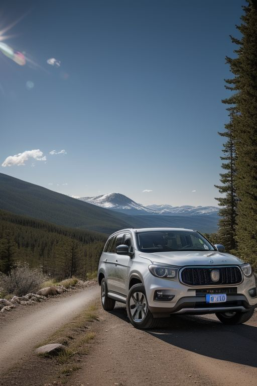
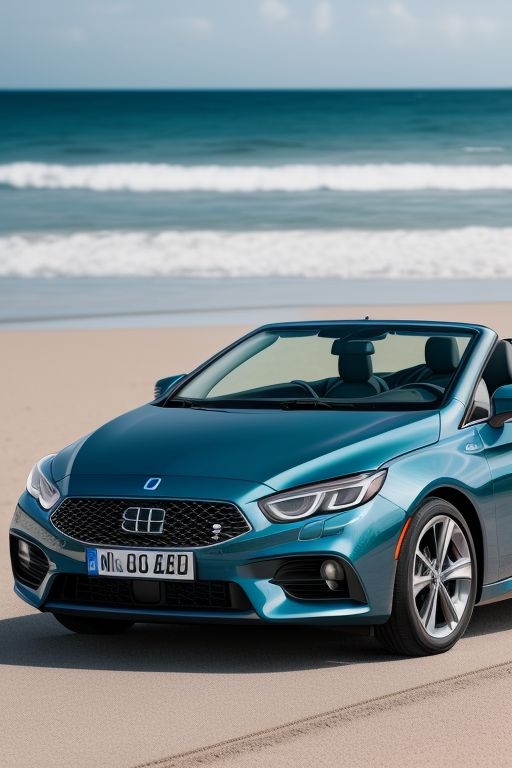

Our groundbreaking Formula 1 car, affectionately nicknamed "Thirsty" by our dedicated crew, made its highly anticipated debut during the 2021 Formula 1 season at the iconic Melbourne Grand Prix Circuit in Australia. This revolutionary car, powered by innovative steam technology, marked a new era in sustainable racing. Since its debut, "Thirsty" has become a symbol of our commitment to pushing the boundaries of engineering and environmental responsibility. Over the years, we have achieved numerous groundbreaking discoveries and advancements, continuously refining our performance. Concluding the 2023 season with an impressive fourth-place finish, we are now setting our sights on climbing even higher. Our team is more determined than ever to secure a spot on the podium in the upcoming season, proving that sustainability and competitive excellence can go hand in hand.

Our family car is designed to be the ultimate companion for all your adventures, whether you're navigating city streets, cruising along scenic highways, or exploring rugged off-road terrain. This versatile all-terrain vehicle offers exceptional performance and comfort, making it the ideal choice for unforgettable road trips. With its spacious backseat and thoughtful design, it can comfortably accommodate families of all sizes, including your furry friends. Whether you're packing for a weekend getaway, heading to a soccer game, or simply running errands, this car ensures that every journey is as enjoyable as the destination. Built for convenience, durability, and style, it truly is the perfect vehicle for creating memories with your loved ones.

Introducing our convertible, the ultimate sports car designed to deliver an exhilarating driving experience for everyone. This sleek and stylish vehicle combines cutting-edge technology with eco-conscious engineering, making it a standout in its class. Equipped with a state-of-the-art heads-up display, the car keeps essential information right in your line of sight, ensuring both safety and convenience during every drive.
At the heart of this innovative convertible is a powerful yet efficient four-cylinder, fully steam-powered engine, showcasing our commitment to sustainable performance. This unique propulsion system not only provides impressive power and acceleration but also minimizes environmental impact, making it an ideal choice for drivers who care about the planet. Whether you're cruising along scenic coastal highways or enjoying the thrill of an open road, this convertible offers the perfect balance of performance, sophistication, and eco-efficiency.